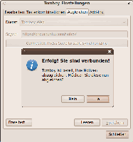
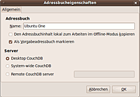

Synchronisationsmöglichkeiten mit UbuntuOne
Archivierte Anleitung
Dieser Artikel wurde archiviert, da er - oder Teile daraus - nur noch unter einer älteren Ubuntu-Version nutzbar ist. Diese Anleitung wird vom Wiki-Team weder auf Richtigkeit überprüft noch anderweitig gepflegt. Zusätzlich wurde der Artikel für weitere Änderungen gesperrt.
Zum Verständnis dieses Artikels sind folgende Seiten hilfreich:
Dieser Artikel soll auf die Synchronisationsmöglichkeiten mit Ubuntu One eingehen. Man kann Tomboy-Notizen, Evolution-Kontakte und Firefox-Lesezeichen auf diesem Weg im Ubuntu-One-Onlinespeicher ablegen. So können beispielsweise zwei Rechner immer über die gleichen Notizen, Kontakte und Lesezeichen verfügen oder man hat auch an anderen Rechnern online Zugriff auf seine Daten. Für alle Varianten ist ein Ubuntu-One-Account Voraussetzung.
Tomboy-Notizen¶
Für die Synchronisation von Tomboy müssen keine weiteren Pakete installiert werden. Es ist aber zu beachten, dass die aktuelle Version installiert ist.
Hinweis:
Seit 28. Februar 2012 ist es nicht mehr möglich, über die Weboberfläche von Ubuntu One auf die Notizen zuzugreifen. Die Synchronisation mit Tomboy ist aber weiterhin bis Ende Februar 2013 möglich.
Installation/Einrichtung¶
Zuerst muss Tomboy gestartet werden: "Anwendungen -> Zubehör -> Tomboy Notizen"
|  |
| Tomboy-Einrichtung |
Nach Klick auf "Bearbeiten -> Einstellungen" und Auswählen des Reiters "Abgleichen" muss man als Dienst "Tomboy Web"bzw "Tomboy im Internet" unter Lucid auswählen. Der Server ist meist schon eingetragen und sollte lauten: https://one.ubuntu.com/notes/
Anschließend muss nach Klick auf "Connect" der PC für Ubuntu One freigeschaltet werden. Dazu öffnet sich eine Webseite, auf der man einen Namen für seinen PC auswählen kann. Anschließend auf "Add this Computer" klicken. Die Webseite kann dann geschlossen werden. Im noch geöffneten Tomboy-Menü muss man nun nur noch die Einstellungen speichern. Dabei wird man gefragt, ob die Notizen gleich abgeglichen werden sollen.
Bedienung¶
Tomboy muss/kann von Hand synchronisiert werden. Dazu einfach auf "Werkzeuge -> Notizen abgleichen" klicken. Bei Konflikten fragt Tomboy in der Grundeinstellung nach, was getan werden soll.
Evolution-Kontakte¶
Installation¶
Um Kontakte synchronisieren zu können ist das Paket evolution-couchdb notwendig. Das Paket ist bereits vorinstalliert. Sollte dies nicht der Fall sein, kann man es nachinstallieren [1]:
evolution-couchdb (universe)
 mit apturl
mit apturl
Paketliste zum Kopieren:
sudo apt-get install evolution-couchdb
sudo aptitude install evolution-couchdb
Anschließend muss Evolution gestartet und eventuell eingerichtet werden.
Sollte abgefragt werden, ob der Zugriff von Evolution auf den Schlüsselring gewährt werden soll, sollte "Immer gewähren" ausgewählt werden. Ebenso wenn DesktopCouch auf den Schlüsselring zugreifen will.
Einrichtung¶
|  |
| Evolution Einstellungen |
In Evolution auf "Kontakte" wechseln ( Strg + 2 ). Das eigene Adressbuch (meist: "Persönlich") auswählen und die zu synchronisierenden Kontakte auswählen, kopieren und in das Ubuntu-One-Adressbuch einfügen.
Anschließend  auf das Ubuntu-One-Adressbuch, auf "Eigenschaften" und dort das Feld "Als Vorgabeadressbuch markieren" anhaken. Durch den letzten Schritt werden alle neuen Kontakte in diesem Adressbuch gespeichert.
Die Synchronisation wird alle 10 Minuten ausgelöst.
auf das Ubuntu-One-Adressbuch, auf "Eigenschaften" und dort das Feld "Als Vorgabeadressbuch markieren" anhaken. Durch den letzten Schritt werden alle neuen Kontakte in diesem Adressbuch gespeichert.
Die Synchronisation wird alle 10 Minuten ausgelöst.
Auch die Kontakte können natürlich online bearbeitet  werden.
werden.
Achtung!
Leider ist die Synchronisation noch nicht ganz ausgereift. Geburtstage und Adressen, die in Evolution eingegeben wurden, erscheinen (noch) nicht im Webinterface. Werden diese Daten dagegen im Webinterface eingegeben, werden sie in Evolution angezeigt. Bitte unbedingt an eine Datensicherung der Kontaktdaten denken!
Firefox-Lesezeichen¶
Installation/Einrichtung¶
Achtung!
Diese Funktion steht seit Oktober 2011 nicht mehr zur Verfügung ! Außerdem kann durch die Installation des Pakets Firefox beeinträchtigt werden! Bei Problemen das Paket deinstallieren oder im Firefox das Add-On deaktivieren!
Voraussetzung ist die Firefox-Version 3.5.x und das Firefox-Add-On Bindwood.
xul-ext-bindwood (universe)
mit apturl
Paketliste zum Kopieren:
sudo apt-get install xul-ext-bindwood
sudo aptitude install xul-ext-bindwood
Anschließend muss Firefox gestartet werden. Sollte abgefragt werden, ob der Zugriff von Bindwood auf den Schlüsselring gewährt werden soll, sollte "Immer gewähren" ausgewählt werden.
Bedienung¶
Der erste Start von Firefox nach erfolgreicher Installation von Bindwood kann länger dauern als gewöhnlich und Firefox ist nicht bedienbar bis die Lesezeichen synchronisiert wurden. Die Lesezeichen werden alle 10 Minuten abgeglichen. Die Lesezeichen werden nun mit allen Rechnern abgeglichen, die auf diese Weise eingerichtet wurden.

- Erstellt mit Inyoka
-
 2004 – 2017 ubuntuusers.de • Einige Rechte vorbehalten
2004 – 2017 ubuntuusers.de • Einige Rechte vorbehalten
Lizenz • Kontakt • Datenschutz • Impressum • Serverstatus -
Serverhousing gespendet von